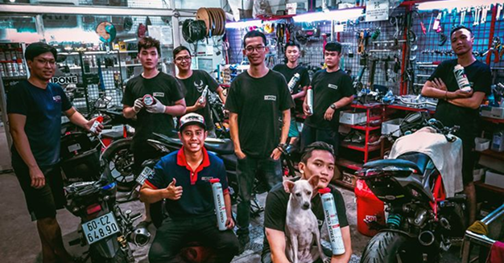

TurboHub - сайт де ти можеш
обрати свій тип молоциклу або знайти свій клуб
Ласкаво просимо на Turbo Hub – ваш провідний ресурс у світі мотоциклів!

Хто ми?
Ми — команда ентузіастів, об'єднаних спільною пристрастю до двох коліс, швидкості та свободи, яку дарує мотоцикл. Наш "Мото Портал" створений для того, щоб стати вашим надійним джерелом інформації, путівником у мотосвіті та місцем, де зустрічаються однодумці.
Що ви знайдете у нас?
Наш сайт присвячений усьому, що пов'язано з мотоциклами:
- Свіжі Новини: Ми оперативно інформуємо вас про найактуальніші події, анонси, виставки та тенденції у мотоіндустрії по всьому світу.
- Огляди та Характеристики: Детальний розбір та повні технічні характеристики нових моделей мотоциклів, які тільки-но сходять з конвеєра. Наші огляди допоможуть вам зробити усвідомлений вибір.
- Тест-драйви: Незалежні враження та оцінки від наших експертів після випробування популярних та ексклюзивних байків.
- Поради та Лайфхаки: Інформація про догляд, обслуговування, тюнінг та безпечне водіння.
- Мотоподорожі та Маршрути: Натхнення для ваших майбутніх пригод та перевірені маршрути.
Наша мета — надати вам якісну, достовірну та цікаву інформацію про мотоцикли, незалежно від вашого досвіду — чи ви новачок, який лише мріє про свій перший байк, чи досвідчений райдер. Залишайтеся з Moto Portal, і будьте завжди в курсі подій у мотосвіті!
З повагою,
Команда TurboHub